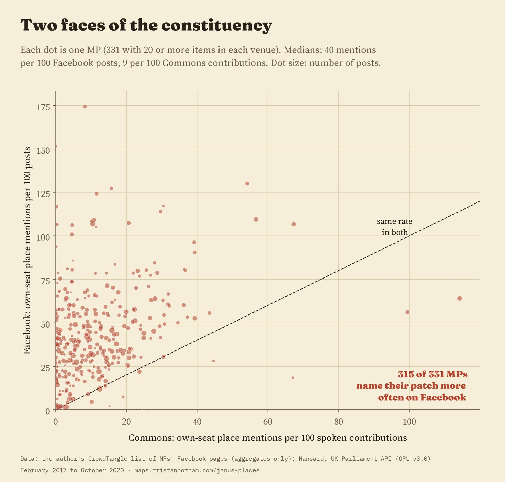
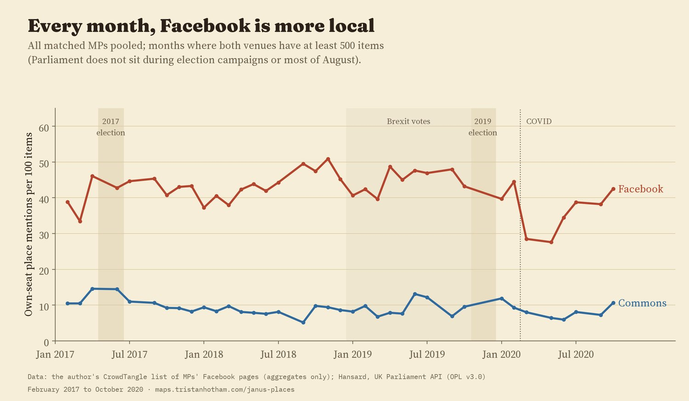
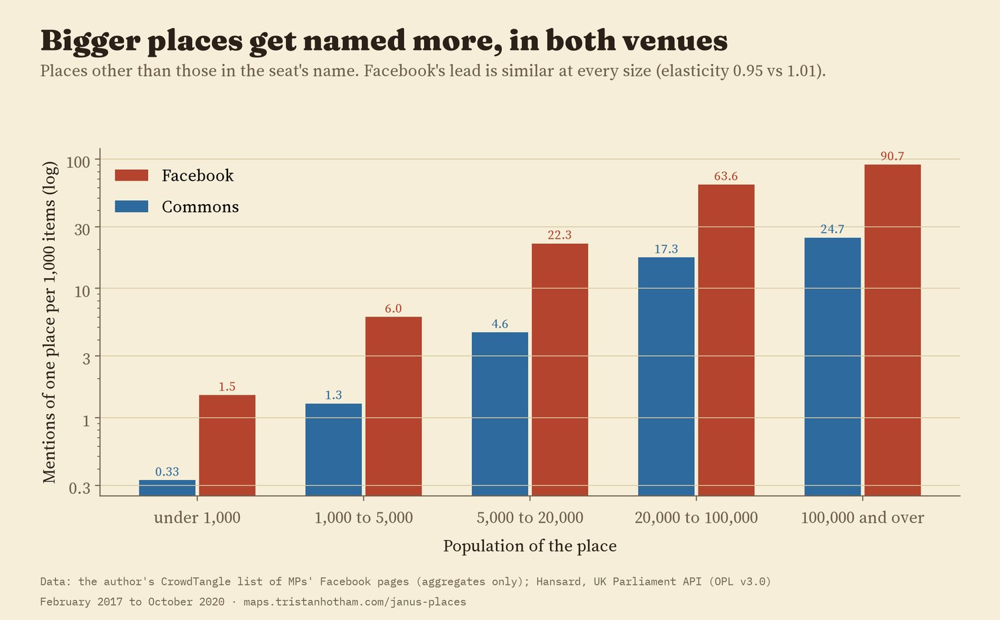
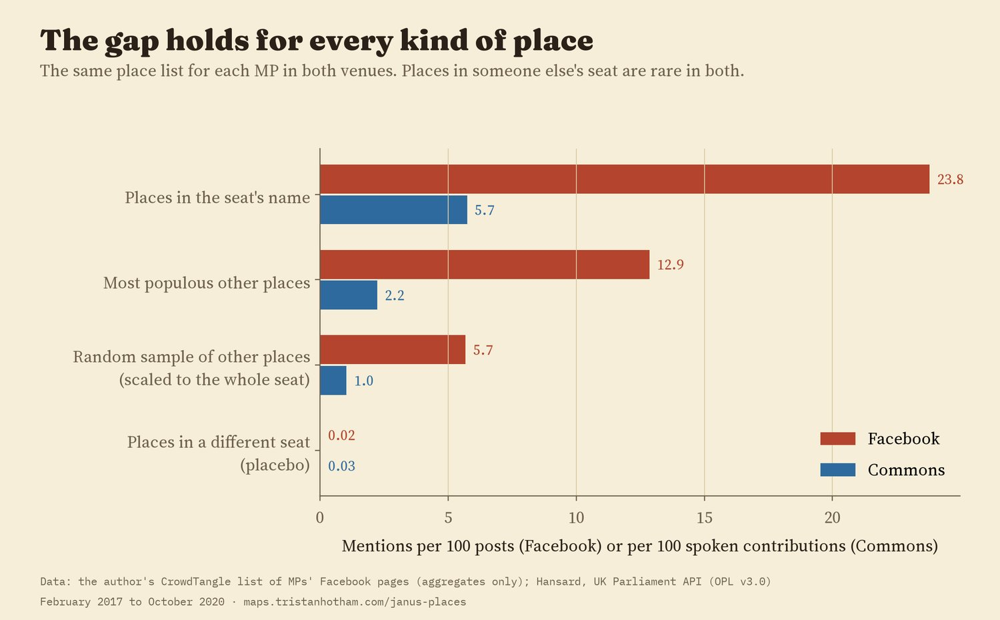
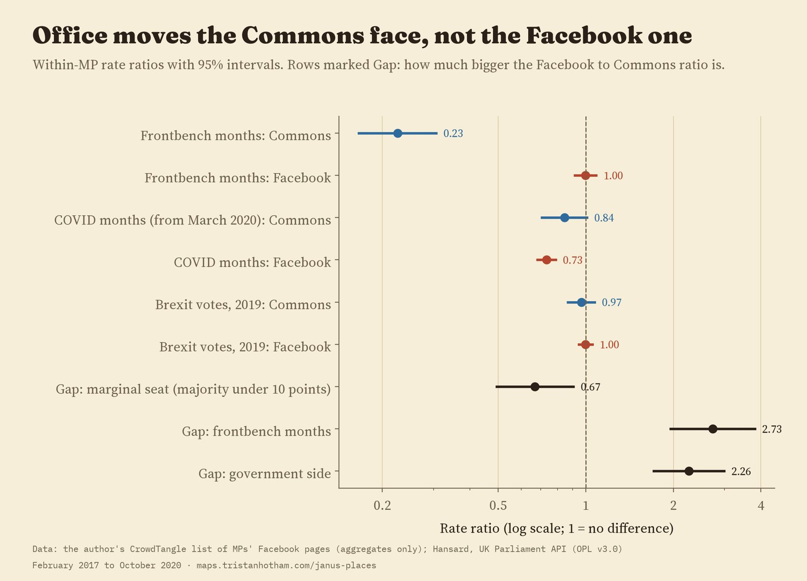
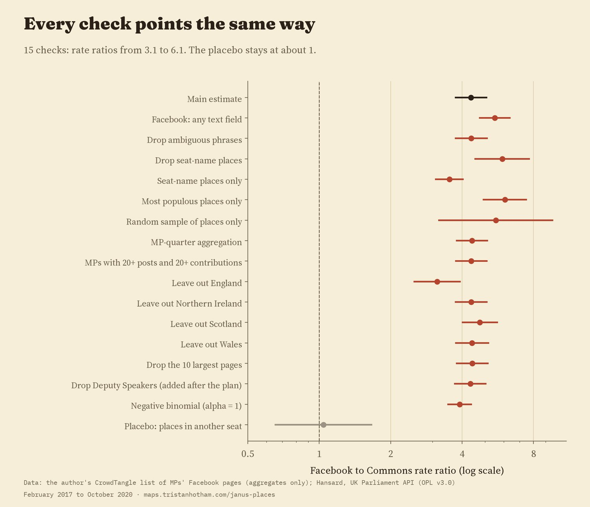

How often each MP named the places in their own seat: per 100 Facebook posts, and per 100 spoken contributions in the House of Commons, February 2017 to October 2020. 350 seats have an MP with a page in the list. Tap a seat for its places in both venues.
An MP speaks to two audiences. In the House of Commons, the audience is other MPs, ministers and the official record. On the MP's own Facebook page, it is constituents. I wanted to know whether MPs show their constituency more in one of these than the other, so I counted how often each MP named the towns and villages in their own seat in both places: the same MP, the same months and the same list of places.
I matched 363 Facebook pages in a list I built during my PhD to the MPs who ran them, and for each MP I wrote down a list of places in their seat before looking at any Commons data: the towns in the seat's name, its eight biggest other places and a random sample of the rest. Then I counted how often each MP's posts and each MP's spoken contributions in the Commons named those places. For every 100 Facebook posts, MPs named a place in their own seat 42 times. For every 100 things they said in the chamber, 9 times. Comparing each MP with themselves in the same months, the Facebook rate is 4.4 times the Commons rate (95% interval 3.8 to 5.1), and 315 of the 331 MPs with at least 20 posts and 20 contributions named their patch more often on Facebook.

Each dot is an MP. Above the dashed line: more local on Facebook.
The data have a hard edge. CrowdTangle exports stop at 300,000 rows, and this one stopped there, so the posts start on 11 February 2017. Everything here covers February 2017 to October 2020: two general elections, the Brexit votes of 2019 and the first months of COVID.

All MPs together, month by month.
I expected Facebook to reach further down the map, to the villages and estates that rarely come up in a debate. It doesn't, at least not in the way I tested. Both venues name bigger places much more than small ones, and at much the same rate. Facebook names places of every size about four times as often (between 3.7 and 4.9 times, by size band). That holds for the towns in the seat's name (24 against 6 per 100 items) and for everywhere else (19 against 3). The page is a louder version of the same map.

Mentions of one place per 1,000 items, by the size of the place.
There is a check built in. Each MP's list also had two places in someone else's seat. If Facebook simply named more places of any kind, those would show the same gap. They don't: they turn up about 0.02 times per 100 posts and 0.03 times per 100 contributions, a ratio of 1.04.

The same places, counted the same way, in both venues.
A third pattern is about office. In the months an MP held a frontbench post (a minister, a shadow minister or a party leader), their Commons contributions named their own seat's places 77% less often than in that same MP's other months. Their Facebook rate didn't change (a ratio of 1.00). In frontbench months the Westminster face names home less; the home face does not. I had expected the gap to shrink for frontbenchers. It grew.
Two other results also went against what I wrote down beforehand. MPs in marginal seats, with majorities under ten points, had a smaller gap, not a bigger one (33% smaller): if anything, they were more local in the chamber. And in spring 2020, as COVID arrived, Facebook pages named local places 27% less often than usual for a few months before recovering. The Brexit votes of 2019 made no clear difference in either venue.

Ratios with 95% intervals, comparing each MP with themselves.
I ran the comparison 15 other ways: counting link titles and image text as well as the MP's own words, dropping ambiguous names like Bath or Sale, leaving out the seat's own name, using only the biggest places or only the random sample, counting by quarter, leaving out each nation in turn, dropping the ten biggest pages, dropping Deputy Speakers, and a different statistical model. The ratio stayed between 3.1 and 6.1 every time.

Every check, and the placebo.
Facebook. The pages come from a CrowdTangle list of MPs' pages that I built for my PhD and exported in 2020. I chose which pages to follow, so this is not every MP: 350 of the 650 seats have a matched MP. A post counts only if the MP held the seat on the day it was made. I used only whether each post's own text named each place. No post text, link or address is stored or shared, only counts per MP, month and place.
The Commons. For each MP and each place, the UK Parliament's Hansard search gave the number of that MP's spoken contributions per month containing the place name, and the number of all their contributions. A contribution can be a long speech or a one-line question; a post can be a sentence and a photo. So this is a rate per item, not per word.
Places. Each 2010 constituency got a list of places from Wikidata's UK settlements, an earlier study of mine and the seat's own name. Names that are also ordinary words or that belong to a bigger place elsewhere were searched as "in" plus the name in both venues. I wrote the full analysis plan before the Commons counts arrived, and everything added later is labelled as such in the paper.
What this cannot say. It counts names, not meaning: a post can name a town to praise it or to complain. The pages are the ones I followed, which over-represent active MPs. And it shows where MPs name their places, not why.